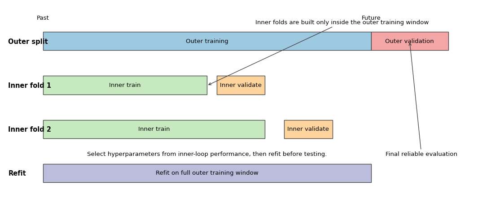
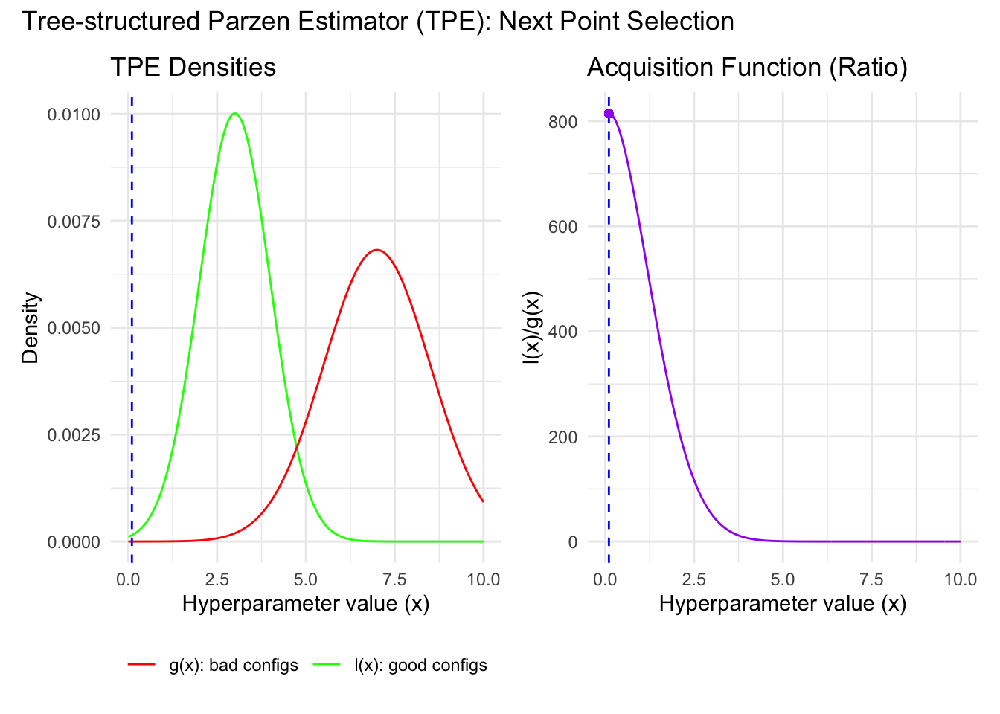

Under active development. A stable version is expected in November 2026. Feedback is very welcome.
14 Advanced Hyperparameter Optimization
14.1 Overview
Hyperparameter optimization (HPO) is the problem of choosing settings that control how a model is estimated rather than parameters learned directly from the loss function. Examples include the penalty strength in ridge or lasso, tree depth and minimum leaf size, the number of trees in a forest, the learning rate in boosting, or the batch size and network width in a neural network.
For econometricians, HPO matters for two reasons. First, predictive performance can change materially across plausible settings. Second, the act of searching itself creates a statistical problem: if we try many specifications and keep the one with the best validation score, we are optimizing a noisy estimate of out-of-sample performance. Without a disciplined workflow, the selected model can look much better in validation than it will look in truly new data.
Parameters are fitted from the training loss once the model class is fixed, such as regression coefficients or tree leaf values.
Hyperparameters are researcher-chosen settings that govern model complexity, regularization, optimization, or resampling design, such as a penalty parameter, tree depth, learning rate, number of trees, or window length.
14.2 Roadmap
We begin with why honest HPO is statistically harder than fitting one fixed model.
We then discuss how dependent data, overlapping targets, and preprocessing choices complicate HPO in econometric applications.
Next we formalize HPO as the optimization of a noisy validation objective over a search space.
We compare baseline search methods, Bayesian optimization, and multi-fidelity methods such as Hyperband.
Finally, we summarize a practical workflow for choosing and validating tuning strategies in econometric work.
14.3 Why Honest HPO Is Hard
Suppose the true generalization error of a configuration \(\lambda\) is \(c(\lambda)\). We do not observe \(c(\lambda)\) directly. We observe a noisy estimate from a validation split, cross-validation scheme, or rolling forecast exercise. If we evaluate many configurations and pick the one with the lowest estimated error, the winner is selected partly because of genuine quality and partly because of favorable noise in the estimate.
The clean separation between training, validation, and test data from Honest Workflow: Validation vs Test Set therefore becomes even more important in HPO. Training data estimate model parameters. Validation data compare hyperparameter settings. Test data remain untouched until the search procedure is finished.
The danger is easy to miss. Re-using the same validation design for one or two candidate settings is often harmless. Re-using it for dozens or hundreds of settings turns the validation score into an optimization target. The minimum validation score across many trials is then usually optimistic. This is the hyperparameter version of specification search (Cawley and Talbot 2010; Varma and Simon 2006).
Selection Bias from Search
Suppose configuration \(j\) has true risk \(c_j\) and validation estimate
The inequality is strict unless the same configuration always wins. The intuition is simple: after search, the winning validation score is partly low because the model is good and partly low because its realized validation noise happened to be favorable.
The same logic is visible in Figure 14.1. The selected configuration is the one with the lowest realized validation loss, but its blue point, which represents true risk, sits above the red validation point. The figure should be read as a visualization of selection-induced optimism, not as a claim about one particular algorithm.
Figure 14.1: Illustration of selection bias from hyperparameter search. The horizontal axis indexes 20 candidate configurations. The blue line shows each configuration’s true risk, the red line shows a noisy validation estimate, and the dashed vertical line marks the configuration selected by minimizing validation loss. For the selected configuration, the realized validation loss lies below the true risk, illustrating how search can make the winner look too good.
Nested resampling is the clean benchmark when we want an honest assessment of the entire tuning procedure.
The inner loop tunes hyperparameters.
The outer loop estimates the out-of-sample performance of the tuned procedure.
The outer validation blocks must remain untouched by the inner search.
In iid settings, the inner and outer loops can use the k-fold design reviewed in K-Fold Cross-Validation. In dependent-data settings, the same logic applies but the folds must be time-aware. The important point is conceptual: the object being evaluated is not one model, but the whole pipeline “fit, tune, select, refit.”
Figure Figure 14.2 gives a time-series version of this logic. The outer split determines where honest evaluation occurs. Inside the outer training window, the researcher runs a second, time-aware tuning exercise. Only after the inner loop selects hyperparameters is the model refit on the full outer training sample and evaluated once on the untouched outer validation block.
Show the code
import matplotlib.pyplot as pltfrom matplotlib.patches import Rectanglefig, ax = plt.subplots(figsize=(11.5, 4.8))ax.set_xlim(0, 100)ax.set_ylim(0, 4.4)ax.axis("off")rows = [ (3.35, "Outer split", [(8, 68, "Outer training", "#9ecae1"), (76, 16, "Outer validation", "#f4a6a6")]), (2.35, "Inner fold 1", [(8, 34, "Inner train", "#c7e9c0"), (44, 10, "Inner validate", "#fdd49e")]), (1.35, "Inner fold 2", [(8, 46, "Inner train", "#c7e9c0"), (58, 10, "Inner validate", "#fdd49e")]), (0.35, "Refit", [(8, 68, "Refit on full outer training window", "#bcbddc")]),]for y, label, blocks in rows: ax.text(0.8, y +0.2, label, ha="left", va="center", fontsize=11, fontweight="bold")for x0, width, text, color in blocks: rect = Rectangle((x0, y), width, 0.42, facecolor=color, edgecolor="0.25", linewidth=1.0) ax.add_patch(rect) ax.text(x0 + width /2, y +0.21, text, ha="center", va="center", fontsize=10)for xpos, text in [(8, "Past"), (76, "Future")]: ax.text(xpos, 4.02, text, ha="center", va="bottom", fontsize=10)ax.annotate("Inner folds are built only inside the outer training window", xy=(42, 2.55), xytext=(52, 3.95), arrowprops={"arrowstyle": "->", "color": "0.25"}, fontsize=10,)ax.annotate("Final honest evaluation", xy=(84, 3.56), xytext=(79, 0.95), arrowprops={"arrowstyle": "->", "color": "0.25"}, fontsize=10,)ax.text(42, 0.95, "Select hyperparameters from inner-loop performance, then refit before testing.", ha="center", fontsize=10)plt.tight_layout()plt.show()

Figure 14.2: Schematic of nested time-series hyperparameter tuning. The top row shows one outer split: an outer training window followed by an untouched outer validation block used only for final evaluation of the tuned procedure. The lower rows show two inner expanding-window folds constructed only inside the outer training window. In each inner fold, the left block is the inner training sample and the right block is the inner validation block used to compare hyperparameter configurations. After tuning, the selected configuration is refit on the full outer training window and then evaluated once on the outer validation block.
Why HPO Is Harder Than Fitting a Single Model
Once hyperparameters are tuned, the validation score is no longer a passive diagnostic. It becomes the objective being optimized.
That changes the statistical interpretation:
A good validation score for one fixed configuration is not the same as a good validation score after a large search.
The more configurations we try, the more opportunity there is to overfit the validation design.
Honest evaluation must assess the tuning procedure itself, not only the final chosen hyperparameters.
14.4 HPO with Dependent and Economic Data
The earlier Time Series Cross-Validation discussion already showed why random k-fold is invalid when temporal order matters. In HPO the same issue is amplified, because an invalid validation scheme does not just distort one model estimate. It can systematically select the wrong hyperparameters.
Time-aware validation. In forecasting problems, expanding-window validation is appropriate when the researcher would realistically re-estimate the model as the sample grows. Rolling-window validation is appropriate when old data may become stale because of structural change or evolving institutions. The choice is part of the research design, not a mere software option.
Regime change and autocorrelation. When loss differentials are serially correlated or the conditional relationship between predictors and outcomes drifts over time, a single random split can be badly misleading. Hyperparameters that look optimal during one calm period may fail during recessions, crises, or policy shifts. That is why HPO in macro-finance applications should be evaluated over multiple forecast origins rather than one convenient split.
Overlapping targets and purging. Suppose the target is 22-day-ahead realized volatility or a cumulative return over the next month. Then nearby observations can share future realizations. Even a time-ordered split can leak if training observations use outcome windows that overlap with the validation block. A practical fix is to purge or embargo observations close to the validation boundary so that the training sample does not contain targets built from the same future data.
Preprocessing inside folds. The warning in Leakage Inside Cross-Validation becomes stricter in HPO. Scaling, winsorization thresholds estimated from the data, imputation, feature selection, principal components, lag selection, and target transformations chosen adaptively must all be learned inside each training fold. Otherwise the tuning criterion itself is contaminated.
Nested time-series tuning. If we need an honest final assessment, the outer loop should use a time-aware split and the inner loop should tune hyperparameters using only the history available inside that outer training window. This is computationally expensive, but it is the right benchmark when the research claim depends on credible out-of-sample performance.
Question for Reflection
Why is it not enough to say “I never touched the test set” if the hyperparameters were tuned using a random k-fold scheme on time-series data?
Suggested Answer
Because the problem is not only test-set contamination. A random k-fold scheme can already leak future information into the validation score, so the search is optimized against an invalid target. Even if the final test set is untouched, the chosen hyperparameters may have been selected by exploiting temporal dependence or overlapping information that would not be available in real forecasting use.
14.5 HPO as an Optimization Problem
Write the hyperparameter vector as \(\lambda \in \Lambda\), where \(\Lambda\) is the search space. For example, \(\lambda\) might contain tree depth, learning rate, minimum leaf size, and a regularization penalty. The ideal target is
where \(c(\lambda)\) denotes the true out-of-sample risk or expected forecast loss. In practice we do not observe \(c(\lambda)\). We work with an estimate
\[
\hat c(\lambda),
\]
constructed from a validation split, cross-validation average, rolling-origin loss, or another resampling design.
This formal view clarifies why HPO is not ordinary gradient-based optimization like the parameter fitting studied in Optimization for Machine Learning. The map \(\lambda \mapsto \hat c(\lambda)\) is often noisy, non-convex, partly discrete, and sometimes undefined outside admissible regions. Hyperparameters can be integers, categories, or conditional choices. Changing one tuning parameter can change the whole fitted model class, so differentiability is usually unavailable or unhelpful.
A practical HPO problem therefore has four ingredients:
a search space\(\Lambda\)
an evaluation rule that produces \(\hat c(\lambda)\)
a search algorithm for proposing new \(\lambda\)
a compute budget limiting how many evaluations we can afford
If the preferred performance measure is larger-is-better, such as an \(R^2\) or utility proxy, we can either maximize that score directly or minimize its negative. The statistical issues are the same.
Search-space design matters. A search space that is too narrow cannot recover good configurations. A search space that is too wide wastes budget on implausible values. In econometric applications the best default is usually a theory-informed box: plausible lag lengths, sensible regularization ranges, and model sizes that fit the available sample size.
Practical Search-Space Conventions
When building a search space, a few conventions are usually sensible.
Tune scale parameters such as learning rates and penalty strengths on a log scale, because moving from \(10^{-4}\) to \(10^{-3}\) is usually more consequential than moving from \(0.100\) to \(0.101\).
Keep structural hyperparameters such as lag length, tree depth, or number of hidden units discrete and bounded by the sample size and the forecasting task.
Use conditional spaces when appropriate. For example, if subsampling is fixed at one, then a second hyperparameter controlling row sampling may be irrelevant.
Exclude values that are statistically implausible before the search begins. A good search space reflects prior econometric judgment rather than pretending every software-permitted setting is equally credible.
These choices do not guarantee good performance, but they often improve HPO more than switching from one sophisticated search algorithm to another.
14.6 Baseline Search Methods
Grid search. Grid search fixes a finite lattice of candidate values for each hyperparameter and evaluates all combinations. It is simple and reproducible, and it can work well when there are only one or two genuinely important continuous hyperparameters. Its weakness is geometric: if there are many dimensions, the number of combinations grows quickly, and most grid points are spent refining dimensions that may barely matter.
Random search. Random search samples configurations from pre-specified distributions over the search space. It looks naive, but it is a strong baseline because it spends trials on distinct combinations rather than exhaustively refining the same coordinates. When only a small subset of hyperparameters drives performance, random search typically covers the important directions more efficiently than a grid.
This low-effective-dimensionality logic is especially relevant in machine learning applications and is one of the central arguments of Bergstra and Bengio (2012). A researcher may tune ten settings, but perhaps only learning rate, tree depth, and regularization strength move performance materially. A grid wastes effort spreading points evenly in all ten dimensions. Random search has a better chance of stumbling into useful combinations along the few dimensions that actually matter.
This geometric point is illustrated in Figure 14.3. Both panels use the same number of evaluations, but the random design generates more distinct values along the important horizontal direction. The interpretation is not that random search is always better, but that equal-budget grid search can waste many trials refining irrelevant coordinates.
Figure 14.3: Stylized comparison of grid search and random search under low effective dimensionality. Each panel shows 25 evaluated configurations in a two-hyperparameter space. The shaded vertical band marks a narrow high-performance region in the important horizontal hyperparameter, while the vertical axis is less consequential. Random search produces more distinct draws along the important direction than the equally sized grid.
When baseline methods are enough. If model evaluations are cheap, the search space is modest, and parallel compute is available, random search is often enough. It is easy to parallelize, robust to noise, and honest about uncertainty: it does not pretend to have learned a precise surrogate relationship from a small number of noisy evaluations.
14.7 Bayesian Optimization
Generic idea. Bayesian optimization (BO) treats HPO as a sequential learning problem. After each evaluation, it updates a surrogate model for the unknown function \(\lambda \mapsto c(\lambda)\) and uses an acquisition rule to decide where to search next. The acquisition balances exploitation of promising regions against exploration of uncertain regions.
Gaussian-process BO. A standard BO design places a Gaussian-process prior on the unknown objective. After observing data
the surrogate produces a posterior mean \(m_t(\lambda)\) and posterior standard deviation \(s_t(\lambda)\). The mean summarizes what the algorithm expects at a candidate point, while the standard deviation summarizes uncertainty. Acquisition rules then translate \((m_t, s_t)\) into a search priority.
A common acquisition rule is expected improvement. If \(c_{\min,t}\) is the best loss seen so far, the expected improvement at \(\lambda\) is
Figure Figure 14.4 makes this tradeoff visual. The top panel shows a surrogate mean together with its uncertainty band and the currently evaluated configurations. The bottom panel converts that information into expected improvement. The candidate with the highest expected improvement is not necessarily the point with the lowest surrogate mean; it can also be a point with substantial uncertainty.
Figure 14.4: Stylized Bayesian-optimization example in one hyperparameter dimension. The top panel shows a surrogate mean for validation loss, a 95% uncertainty band, previously evaluated configurations, and the current best observed loss. The bottom panel shows the resulting expected-improvement function. The dashed vertical line marks the next candidate selected by maximizing expected improvement, which reflects both predicted loss and uncertainty.
and \(\Phi\) and \(\phi\) denote the standard normal cdf and pdf. The first term rewards low predicted loss, while the second rewards uncertainty. This is the standard exploitation-versus-exploration decomposition used in classical Bayesian optimization.
GP BO is most attractive when each evaluation is expensive and the search dimension is not too high. Its weaknesses are equally important:
surrogate fitting becomes harder as the search space grows
categorical and conditional hyperparameters are awkward
noisy validation scores can make the surrogate unstable
the algorithm is more sequential than plain random search
TPE. Tree-structured Parzen Estimators are often used as a more practical BO alternative. Instead of modeling the loss as a function of \(\lambda\) directly, TPE splits past trials into a good set and a bad set using a loss threshold \(y^\ast\), often chosen as a lower quantile of observed losses. It then fits two densities:
\[
\ell(\lambda) = p(\lambda \mid y \le y^\ast),
\qquad
g(\lambda) = p(\lambda \mid y > y^\ast),
\]
where \(y\) denotes the observed validation loss.
The search idea is simple: propose candidates that look likely under the good-trial density and unlikely under the bad-trial density. In practice this means favoring large values of
\[
\frac{\ell(\lambda)}{g(\lambda)}.
\]
In the original TPE paper (Bergstra et al. 2011), this density-ratio criterion is linked directly to expected improvement under the TPE construction.
TPE is appealing because it handles mixed and conditional search spaces more easily than a GP surrogate. It also avoids forcing a smooth global regression model onto a search space that may include integers, categories, and hard constraints.
TPE Algorithm
One practical TPE workflow can be summarized as follows.
Evaluate an initial set of randomly sampled hyperparameter configurations.
Split the evaluated archive into a good set and a bad set using a quantile threshold \(\gamma\) on the observed validation loss.
Fit the densities \(\ell(\lambda)=p(\lambda\mid y \le y^\ast)\) and \(g(\lambda)=p(\lambda\mid y > y^\ast)\).
Sample candidate configurations from the good density and score them by the ratio \(\ell(\lambda)/g(\lambda)\).
Evaluate the highest-scoring candidate, update the archive, and repeat until the budget is exhausted.
The tuning parameter \(\gamma\) controls how selective the “good” set is. Smaller \(\gamma\) focuses more aggressively on the currently best-performing trials.

Figure 14.5: One-dimensional illustration of TPE: the algorithm prefers candidate values that look likely under the good-trial density and unlikely under the bad-trial density.
Figure Figure 14.5 shows this density-ratio logic directly. The good-trial density \(\ell(\lambda)\) is concentrated near values that have worked well before, while the bad-trial density \(g(\lambda)\) penalizes values associated with poor trials. The candidate chosen next is the one where the ratio is most favorable.
GP BO versus TPE. Both are sequential model-based search methods. GP BO is often cleaner conceptually when the search space is low-dimensional and mostly continuous. TPE is often more robust in practical AutoML-style settings with mixed types, wide ranges, or tree-structured conditional choices. The statistical point is the same: both use past evaluations to search more intelligently than random sampling.
Question for Reflection
Consider two settings: (A) four continuous hyperparameters, 25 trials allowed, each validation run takes 2 hours; (B) twelve mixed hyperparameters (continuous, integer, categorical), 500 trials allowed, each run takes 10 seconds. In which setting is Bayesian optimization likely to outperform random search, and what changes in the other setting that undercuts the BO advantage?
Suggested Answer
BO is likely to help in setting A. With only 25 expensive trials in a 4-dimensional continuous space, the surrogate model can learn meaningful structure from a small number of evaluations and steer the search toward promising regions. In setting B, the budget is large enough that random search covers the space densely, the mixed and high-dimensional search space makes it harder for a surrogate to fit well, and the low per-trial cost means that the overhead of fitting and optimizing the surrogate at each step is not justified by the savings from smarter proposals.
14.8 Multi-Fidelity Search
When each model can be evaluated at different resource levels, full-budget tuning may be wasteful. The resource might be training epochs, sample size, number of boosting rounds, or another quantity that lets us obtain a cheap but noisy preview of eventual performance.
Successive halving. Start with many configurations at a small budget \(r\). Rank them by validation performance. Keep only the top fraction, typically \(1/\eta\), and increase their budget to \(\eta r\). Repeat until only a small set of configurations is left at high budget.
This logic can save large amounts of computation because obviously poor configurations are discarded early. The key assumption is that early, cheap performance is informative about later, expensive performance.
Successive Halving Algorithm
Let \(p^{[0]}\) denote the initial number of configurations, let \(r^{[0]}\) denote the initial resource per configuration, and let \(\eta > 1\) be the elimination rate.
For rounds \(t = 0,1,\ldots,s\), fit the current \(p^{[t]}\) configurations using budget \(r^{[t]}\).
Rank configurations by validation performance and keep only the top fraction \(1/\eta\).
Update the candidate count and resource level as \[
p^{[t+1]} = \left\lfloor \frac{p^{[t]}}{\eta} \right\rfloor,
\qquad
r^{[t+1]} = \eta r^{[t]}.
\]
Stop when only a small set of candidates remains or when the total budget \[
\sum_{t=0}^{s} p^{[t]} r^{[t]}
\] reaches the allowed computational limit.
Successive halving is efficient because it trades breadth for depth: many configurations get a cheap initial test, while only promising ones receive expensive training.
Hyperband. Successive halving depends on the initial tradeoff between number of configurations and initial budget. Hyperband addresses this by running several halving brackets with different starting points. Some brackets try many configurations very cheaply. Others start with fewer configurations but give each one more initial resources. This hedges against the risk of choosing the wrong early-stopping aggressiveness (Li et al. 2018).
Hyperband as a Family of Brackets
Let \(R\) denote the maximum resource per configuration and let \(\eta > 1\) be the elimination rate. Define
where bracket \(s\) starts with \(n_s\) configurations at resource level \(r_s\). Large-\(s\) brackets explore many configurations cheaply, while small-\(s\) brackets explore fewer configurations more deeply from the start.
Figure Figure 14.6 shows how these brackets differ. The wide bracket starts with many configurations and a very small budget, while the deep bracket starts with fewer configurations but allocates more resources immediately. Hyperband is attractive because it does not commit to one single breadth-versus-depth tradeoff in advance.
Figure 14.6: Schematic view of three Hyperband brackets. Each rounded box reports the number of surviving configurations and the budget allocated to each one at a given stage. Moving from left to right within a bracket, fewer configurations remain and the budget per configuration rises. Across brackets, the wide bracket starts broad and cheap, the balanced bracket is intermediate, and the deep bracket starts with fewer candidates but a higher initial budget.
When multi-fidelity methods work well. Hyperband is most attractive when:
full training runs are expensive
partial learning curves are informative
many hyperparameter settings are clearly poor and can be pruned early
Failure modes. Hyperband can be unreliable when early scores are noisy, non-monotone, or systematically biased against slow starters. This is common in deep learning, but it can also occur in econometric forecasting when the validation block is short or when instability early in training is not informative about final performance. In those settings, a larger minimum budget or a less aggressive elimination rule may be needed.
14.9 Practical Workflow for Econometricians
The tuning method should match the statistical design, not just the software defaults.
Choose the evaluation metric first. Decide whether the target is mean squared forecast error, log score, CRPS, classification loss, or another application-specific measure. Hyperparameters should be selected against the criterion that actually matters.
Choose a validation design that respects the information set. For iid data, k-fold cross-validation may be adequate. For dependent data, use expanding windows, rolling windows, or purged time-aware splits as appropriate.
Define a defensible search space. Use theory, prior empirical knowledge, and sample-size limits to avoid absurd configurations.
Start with a baseline. Random search is a strong default because it is simple, parallel, and robust.
Escalate only when the budget justifies it. Use BO when evaluations are expensive enough that learning from past trials matters. Use Hyperband when partial-resource evaluations are genuinely informative.
Refit only after tuning is complete. Once the hyperparameters are selected, refit the model on the full training sample available before the final test period.
Keep the final test set for one last check. If the final test result disappoints, that is information about the procedure, not an invitation to keep tuning on the same test period.
Packages such as Optuna make these search strategies convenient to run, especially random search, TPE, and pruning-based workflows. The statistical issues do not disappear just because the interface is convenient. Good tooling cannot rescue an invalid validation design.
Method comparison
Method
Sample efficiency
Parallelism
Needs informative partial feedback
Best use setting
Grid search
Low once dimension grows
High
No
Very small search spaces with a few interpretable settings
Random search
Moderate and often surprisingly strong
Very high
No
Strong baseline when evaluations are cheap or parallel compute is available
GP Bayesian optimization
High when trials are expensive and dimension is modest
Limited to moderate
No
Small-to-medium continuous search spaces with tight budgets
TPE
High in mixed or conditional spaces
Limited to moderate
No
Practical BO-style search when hyperparameters are heterogeneous
Hyperband
High when early performance predicts final performance
High
Yes
Expensive training jobs where bad configurations can be pruned early
14.10 Summary
Key Takeaways
Hyperparameter optimization searches over model settings using a noisy estimate of out-of-sample performance, so the search procedure itself can overfit.
Honest HPO requires a clean separation between training, validation, and test data, and nested resampling is the benchmark when the entire tuning procedure must be evaluated credibly.
In econometric applications, time order, overlapping targets, preprocessing leakage, and regime change are central design issues rather than technical afterthoughts.
Random search is a strong baseline, Bayesian optimization uses past evaluations to guide future trials, and Hyperband uses cheap partial evaluations to save computation.
The best HPO method depends on the evaluation design, search-space structure, and compute budget, not on a universal ranking of algorithms.
Common Pitfalls
Tuning on the test set: A test set used repeatedly is no longer a test set.
Random cross-validation for dependent data: If temporal order matters, random folds can select hyperparameters that exploit future information.
Preprocessing outside the fold: Standardization, imputation, feature selection, and adaptive transformations must be refit within each training fold.
Assuming Bayesian optimization always dominates: BO can struggle in noisy, high-dimensional, or highly discrete search spaces, and random search remains a strong baseline.
Pruning too aggressively: Hyperband can eliminate slow but ultimately good configurations when early learning curves are noisy or misleading.
14.11 Exercises
Exercise 14.1: Honest Hyperparameter Tuning for Time-Series Forecasts
You are tuning a gradient boosting model to forecast monthly industrial production growth. Candidate predictors include lags of the target, survey indicators, and financial variables. The researcher evaluates 12 hyperparameter configurations using the same expanding-window validation design and then keeps the configuration with the lowest average validation mean squared forecast error.
Let \(R\) denote the common true out-of-sample loss of all 12 configurations, and let \(\hat{R}_k = R + \varepsilon_k\), \(k=1,\dots,12\), where the \(\varepsilon_k\) are iid mean-zero noise terms. First show, using the identity \(\min(a,b)=\frac{a+b-|a-b|}{2}\), that for two configurations we have \(\mathbb{E}[\min(\hat{R}_1,\hat{R}_2)] < R\). Then explain why this implies \(\mathbb{E}[\min_k \hat{R}_k] < R\) for 12 configurations, and interpret the result for the reported validation loss of the selected configuration.
Suppose the research claim is that “tuned gradient boosting improves forecasting performance relative to a benchmark autoregression.” Describe a nested time-series evaluation design that can assess this claim honestly.
In one application, an expanding-window search selects a relatively deep tree with many boosting rounds, while a rolling-window search selects a shallower and more heavily regularized configuration. Give an econometric reason why these two validation schemes can favor different hyperparameters, and explain when the rolling-window choice would be more credible.
Suppose the target is now 12-month-ahead cumulative output growth, so adjacent observations have overlapping outcome windows. Explain why this creates an additional leakage problem during tuning and how purging or an embargo around the validation block can help.
Exam level
Hint for Part 1
For two candidates, use \(\min(\hat{R}_1,\hat{R}_2) = R + \frac{\varepsilon_1+\varepsilon_2-|\varepsilon_1-\varepsilon_2|}{2}\) and take expectations. Then argue that the same logic extends to \(K>2\).
Hint for Part 2
Separate the job of choosing hyperparameters from the job of evaluating the entire tuning procedure.
Hint for Part 3
Think about structural change and whether older observations are still informative for the current forecasting environment.
Hint for Part 4
Nearby training observations may share future realizations with the validation target when horizons overlap.
Solution
Part 1: Selection bias from tuning
For two configurations, using the identity \(\min(\hat{R}_1,\hat{R}_2)=\frac{\hat{R}_1+\hat{R}_2-|\hat{R}_1-\hat{R}_2|}{2}\) and substituting \(\hat{R}_k=R+\varepsilon_k\),
since \(|\varepsilon_1-\varepsilon_2|>0\) with positive probability. The same logic extends by induction: for any \(K\ge 2\), \(\mathbb{E}[\min_k \hat{R}_k]\le \mathbb{E}[\min(\hat{R}_1,\hat{R}_2)]<R\), because adding candidates can only lower the minimum further.
This means the reported validation loss of the selected configuration is optimistically biased. The chosen configuration is selected partly because it is genuinely good and partly because its realized validation noise happened to be favorable. This is the HPO analogue of specification search in econometrics.
Part 2: Nested time-series evaluation
Use an outer time-series split to evaluate the final tuned procedure and an inner time-series split to choose hyperparameters.
In each outer split, reserve a future block as the outer validation block.
Using only the data available before that block, run an inner expanding-window or rolling-window search across the 12 hyperparameter configurations.
Select the configuration with the best inner-loop average validation loss.
Refit gradient boosting on the full outer training history using the chosen hyperparameters.
Evaluate once on the outer validation block.
Repeat across outer forecast origins and compare the resulting outer-loop losses to the benchmark autoregression.
The outer-loop losses estimate the out-of-sample performance of the full tuning-and-refit procedure rather than the in-sample winner of one search.
Part 3: Why window choice can change the selected hyperparameters
Expanding windows give heavy weight to older observations because the training sample keeps growing. If the predictor-response relationship is fairly stable, this can favor deeper or less regularized configurations that exploit structure visible over a long history. Rolling windows discard older data and therefore emphasize recent regimes. If the economy has experienced structural change, institutional shifts, or crisis-period breaks, a rolling-window search may prefer shallower or more regularized hyperparameters because older patterns are no longer reliable. The rolling-window choice is more credible when the forecaster believes the current environment is more similar to the recent past than to the distant past.
Part 4: Overlapping targets and purging
With a 12-month-ahead cumulative-growth target, adjacent observations can share some of the same future outcomes. Then a training observation near the validation boundary may contain target information built from months that also enter the validation target. This creates leakage even if the split respects calendar order. Purging or imposing an embargo removes training observations whose outcome windows overlap with the validation block, so the inner-loop validation score better matches the information structure of a genuine forecast exercise.
Exercise 14.2: Bayesian Optimization and TPE
Suppose you are tuning a forecasting model with four hyperparameters: learning_rate, max_depth, min_samples_leaf, and subsample. Each model evaluation requires a full rolling-window validation exercise and is therefore expensive.
Explain the main idea of Bayesian optimization. What are the roles of the surrogate model and the acquisition rule?
In a Gaussian-process BO scheme, the current best observed validation loss is \(c_{\min}=0.45\). The surrogate model predicts:
Configuration A: posterior mean \(m_A=0.42\), posterior standard deviation \(s_A=0.01\).
Configuration B: posterior mean \(m_B=0.47\), posterior standard deviation \(s_B=0.10\).
Expected improvement is \[
\mathrm{EI}(\lambda)=s\left[z\,\Phi(z)+\phi(z)\right],
\qquad
z=\frac{c_{\min}-m}{s},
\] where \(\Phi\) and \(\phi\) are the standard normal CDF and PDF. Using \(\Phi(3)\approx 0.999\), \(\phi(3)\approx 0.004\), \(\Phi(-0.2)\approx 0.421\), and \(\phi(-0.2)\approx 0.391\), compute \(\mathrm{EI}\) for both configurations and explain which one the acquisition function prefers.
In a TPE scheme, three candidate configurations have estimated density ratios \[
\frac{\ell(\lambda_A)}{g(\lambda_A)} = 1.2, \qquad
\frac{\ell(\lambda_B)}{g(\lambda_B)} = 2.8, \qquad
\frac{\ell(\lambda_C)}{g(\lambda_C)} = 0.9.
\] Which candidate would TPE prefer next, and what is the economic interpretation of that choice?
Give two conditions under which Bayesian optimization is likely to outperform plain random search, and one condition under which random search may still be preferable.
Exam level
Hint for Part 1
Bayesian optimization learns from previous trials instead of treating each draw independently.
Hint for Part 2
Compute \(z_A=(0.45-0.42)/0.01\) and \(z_B=(0.45-0.47)/0.10\), then substitute into the EI formula with \((m,s)=(m_A,s_A)\) and \((m_B,s_B)\).
Hint for Part 3
TPE prefers candidates that look much more like the good set than the bad set.
Hint for Part 4
Think about evaluation cost, search dimension, and whether the objective looks learnable from a small number of noisy observations.
Solution
Part 1: Core idea of Bayesian optimization
Bayesian optimization treats validation loss as an unknown function of the hyperparameters. A surrogate model summarizes what past evaluations imply about that function, while the acquisition rule uses the surrogate to choose the next point. The acquisition balances exploitation of regions with low predicted loss against exploration of regions where uncertainty is still high.
Part 2: EI computation and exploration
For Configuration A: \(z_A=(0.45-0.42)/0.01=3\), so
Configuration B has slightly higher EI despite a worse posterior mean. The high posterior uncertainty creates enough probability of beating \(c_{\min}\) that the exploration payoff outweighs A’s lower point prediction. This is why expected improvement naturally balances exploitation and exploration.
Part 3: TPE choice
TPE would prefer configuration B because it has the largest ratio \(\ell(\lambda)/g(\lambda)\). That means B looks relatively likely under the density fitted to historically good trials and relatively unlikely under the density fitted to bad trials. Economically, the algorithm is concentrating scarce validation budget on a region of the search space that past evidence suggests is more promising.
Part 4: When BO should or should not beat random search
Bayesian optimization is likely to outperform random search when:
each evaluation is expensive, so using past trials to guide future ones is valuable
the search dimension is modest enough that a surrogate can learn something useful from a limited number of observations
Random search may still be preferable when the search space is very high-dimensional, highly discrete, or so noisy that the surrogate learns little. It is also attractive when many evaluations can be run in parallel cheaply.
Exercise 14.3: Hyperband Under Noisy Learning Curves
A neural network is trained to predict firm default probabilities from panel data. Training one configuration to completion takes 9 hours, which in this setup corresponds to 81 epochs. You consider Hyperband with elimination rate \(\eta = 3\).
Suppose one successive-halving bracket starts with 27 configurations trained for 3 epochs each. How many configurations remain after each elimination round, and what budget does each surviving configuration receive if the budget is multiplied by \(\eta\) at each stage?
Compute the total cost of this successive-halving bracket in configuration-epochs (sum of configurations \(\times\) epochs at each round). Compare this with the cost of evaluating 27 configurations at the full 81-epoch budget. By what factor does successive halving reduce the total compute?
Suppose validation loss is very noisy in the first few epochs and some good models learn slowly. What specific risk does this create for Hyperband?
Compare Hyperband, random search, and Bayesian optimization for this problem. Under what condition would Hyperband clearly have the advantage?
Exam level
Hint for Part 1
Each round keeps the top one-third of the current configurations and triples the budget.
Hint for Part 2
Add up the products (number of configurations \(\times\) epochs per configuration) across all four rounds from Part 1. For full random search, multiply 27 by 81.
Hint for Part 3
If early rankings are unreliable, elimination can be a mistake rather than a saving.
Hint for Part 4
Hyperband needs partial training performance to be informative about full training performance.
Solution
Part 1: Successive-halving arithmetic
Start with 27 configurations at 3 epochs.
After the first round, keep \(27/3 = 9\) configurations and raise their budget to \(3 \times 3 = 9\) epochs.
After the second round, keep \(9/3 = 3\) configurations and raise their budget to \(9 \times 3 = 27\) epochs.
After the third round, keep \(3/3 = 1\) configuration and raise its budget to \(27 \times 3 = 81\) epochs.
So the sequence is:
27 configurations at 3 epochs
9 configurations at 9 epochs
3 configurations at 27 epochs
1 configuration at 81 epochs
Part 2: Budget comparison
The total cost of the successive-halving bracket is
Full random search with 27 configurations costs \(27\times 81=2{,}187\) configuration-epochs. The ratio is \(2{,}187/324 \approx 6.75\), so successive halving reduces the total compute by roughly a factor of 7 while still evaluating 27 initial candidates. The saving comes from discarding weak configurations early rather than training all of them to completion.
Part 3: Risk from noisy early curves
If early validation loss is noisy or some good models improve only later, Hyperband may eliminate them before they have a chance to reveal their true quality. The algorithm then saves computation at the cost of selecting the wrong configurations.
Part 4: Comparison across methods
Random search is simple and highly parallel, but it wastes budget because every configuration receives the full 9-hour run. Bayesian optimization can be more sample-efficient than random search, but unless it is combined with pruning it still spends a full evaluation on each chosen configuration. Hyperband has the clearest advantage when partial training performance is informative about eventual full-budget performance, because then early stopping removes bad configurations cheaply without discarding many genuinely good ones.
14.12 References
Bergstra, James, Remi Bardenet, Yoshua Bengio, and Balazs Kegl. 2011. “Algorithms for Hyper-Parameter Optimization.” In Advances in Neural Information Processing Systems 24, 2546–54.
Bergstra, James, and Yoshua Bengio. 2012. “Random Search for Hyper-Parameter Optimization.”Journal of Machine Learning Research 13: 281–305.
Cawley, Gavin C., and Nicola L. C. Talbot. 2010. “On over-Fitting in Model Selection and Subsequent Selection Bias in Performance Evaluation.”Journal of Machine Learning Research 11: 2079–2107.
Jones, Donald R., Matthias Schonlau, and William J. Welch. 1998. “Efficient Global Optimization of Expensive Black-Box Functions.”Journal of Global Optimization 13 (4): 455–92. https://doi.org/10.1023/A:1008306431147.
Li, Lisha, Kevin Jamieson, Giulia DeSalvo, Afshin Rostamizadeh, and Ameet Talwalkar. 2018. “Hyperband: A Novel Bandit-Based Approach to Hyperparameter Optimization.”Journal of Machine Learning Research 18 (185): 1–52.
Snoek, Jasper, Hugo Larochelle, and Ryan P. Adams. 2012. “Practical Bayesian Optimization of Machine Learning Algorithms.” In Advances in Neural Information Processing Systems 25, 2951–59.
Varma, Sudhir, and Richard Simon. 2006. “Bias in Error Estimation When Using Cross-Validation for Model Selection.”BMC Bioinformatics 7: 91. https://doi.org/10.1186/1471-2105-7-91.